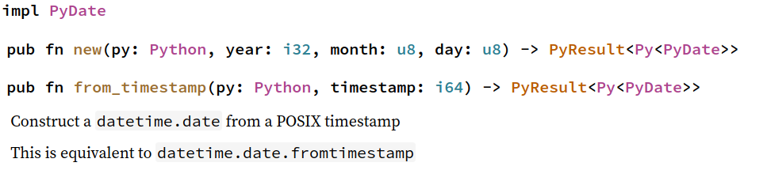
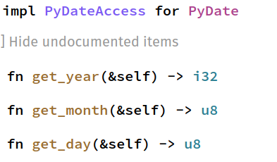

<!doctype html>
<html lang="en">

	<head>
		<meta charset="utf-8">

		<title>Build Your Backend with Rust</title>

		<meta name="description" content="A framework for easily creating beautiful presentations using HTML">
		<meta name="author" content="Hakim El Hattab">
<meta name="apple-mobile-web-app-capable" content="yes" />
		<meta name="apple-mobile-web-app-status-bar-style" content="black-translucent" />

		<meta name="viewport" content="width=device-width, initial-scale=1.0, maximum-scale=1.0, user-scalable=no">

		<link rel="stylesheet" href="reveal.js/css/reveal.css">
		<link rel="stylesheet" href="reveal.js/css/theme/white.css" id="theme">

    
        <link rel="stylesheet" href="css/custom.css">
    


		<!-- For syntax highlighting -->
        
        <link rel="stylesheet" href="reveal.js/lib/css/zenburn.css ">

		<!-- If the query includes 'print-pdf', use the PDF print sheet -->
		<script>
			document.write( '<link rel="stylesheet" href="reveal.js/css/print/' + ( window.location.search.match( /print-pdf/gi ) ? 'pdf' : 'paper' ) + '.css" type="text/css" media="print">' );
		</script>

		<!--[if lt IE 9]>
		<script src="reveal.js/lib/js/html5shiv.js"></script>
		<![endif]-->
	</head>

	<body>
		<div class="reveal">

            <div class="slides">

				
				<section data-markdown data-separator="^\n---\n$" data-separator-vertical="^\n--\n$" data-notes="^Note:">
					<script type="text/template">
						<h1 style="font-size: 3em">Build your Backend with Rust</h1>
<br/>
<br/>
<span style="font-size: 2.5em">
Paul Ganssle
</span>
<br/>
<br/>


<br/>
<br/>
<br/>
<br/>
<a rel="license" href="http://creativecommons.org/licenses/by/4.0/">
    
</a>
<br/>

Notes:


					</script>
				</section>
				
				<section data-markdown data-separator="^\n---\n$" data-separator-vertical="^\n--\n$" data-notes="^Note:">
					<script type="text/template">
						# Python as Glue


Notes:

Python is an excellent "glue" language - it's super easy to write APIs and work with,
but it's got a lot of overhead.

Glue Libraries
- Numpy
- OpenCV
- TensorFlow / PyTorch
- Pillow (imaging)

					</script>
				</section>
				
				<section data-markdown data-separator="^\n---\n$" data-separator-vertical="^\n--\n$" data-notes="^Note:">
					<script type="text/template">
						# Pascal's Triangle: Python Version

```python
def pascal_row(n):
    row = [0] * n
    row[0] = 1

    for i in range(1, n):
        curr = 1
        for j in range(1, i + 1):
            last = curr
            curr = row[j - 1]
            row[j - 1] = last + curr

    return row
```

## Output:

```
>>> for r in range(1, 8):
...     rowstr = ', '.join(map(str, pascal_row(r)))
...     print(f"{rowstr:^40}")
...
                   1
                  1, 1
                1, 2, 1
               1, 3, 3, 1
             1, 4, 6, 4, 1
           1, 5, 10, 10, 5, 1
         1, 6, 15, 20, 15, 6, 1
 ```

--

# C API

```C
static PyObject* pascal_row(PyObject* self, PyObject* n_rows) {
    size_t n;
    if ((n = PyLong_AsSize_t(n_rows)) == (size_t)-1 && PyErr_Occurred()) {
        return NULL;
    }

    int* row = calloc(n, sizeof(int));
    if (row == NULL) {
        PyErr_NoMemory(); // raise MemoryError()
        return NULL;
    }

    // Populate the C array containing the Pascal's triangle row
    row[0] = 1;
    int curr = 0, last = 0;
    for (size_t i = 2; i <= n; ++i) {
        curr = row[0];

        for (size_t j = 1; j <= i; ++j) {
            last = curr;
            curr = row[j];
            row[j] = last + curr;
        }
    }

    // Convert to Python list
    PyObject* rv = PyList_New(n);
    if (rv == NULL) {
        goto cleanup;
    }

    PyObject * obj = NULL;
    for (size_t i = 0; i < n; ++i) {
        if ((obj = PyLong_FromLong(row[i])) == NULL || // int -> Py int
                PyList_SetItem(rv, i, obj)) {          // rv[i] = obj
            Py_DECREF(rv);          // On error, remove list
            rv = NULL;
            goto cleanup;
        }
    }

cleanup:
    free(row);
    return rv;
}
```

Notes:

Here's the same program, written with the C API.

--

# C API: Performance benefits

```
In [1]: from cmod import ext, purepy
In [2]: %timeit ext.pascal_row(500)
81.8 µs ± 843 ns per loop (mean ± std. dev. of 7 runs, 10000 loops each)

In [3]: %timeit purepy.pascal_row(500)
11.2 ms ± 101 µs per loop (mean ± std. dev. of 7 runs, 100 loops each)

In [4]: 11.2 / 0.082
Out[4]: 136.58536585365852
```

<br/>
<br/>
<table>
    <tr>
        <td>N</td>
        <td>Pure Python</td>
        <td>C Extension</td>
        <td>Ratio</td>
    </tr>
    <tr>
        <td>1</td>
        <td>401 ns</td>
        <td>159 ns</td>
        <td>2.5</td>
    </tr>
    <tr>
        <td>10</td>
        <td>5.18 μs</td>
        <td>221 ns</td>
        <td>23</td>
    </tr>
    <tr>
        <td>100</td>
        <td>396 μs</td>
        <td>5.4 μs</td>
        <td>73</td>
    </tr>
    <tr>
        <td>1000</td>
        <td>47.4 ms</td>
        <td>302 μs</td>
        <td>157</td>
    </tr>
</table>


--

# C API: Downsides

- Manual memory management
- Manual reference counting (`Py_INCREF`, `Py_DECREF`)
- No memory safety:

```C
    for (size_t i = 2; i <= n; ++i) {
        curr = row[0];

        for (size_t j = 1; j <= i; ++j) {
            last = curr;
            curr = row[j];
            row[j] = last + curr;
        }
    }
```
<!-- .element class="fragment" -->

Notes:

Oops, that `<=` should be a `<`, we're actually reading and writing past the end of this array

					</script>
				</section>
				
				<section data-markdown data-separator="^\n---\n$" data-separator-vertical="^\n--\n$" data-notes="^Note:">
					<script type="text/template">
						# Rust API Bindings: PyO3

```rust
fn pascal_row_impl(n: usize) -> Vec<u32> {
    let mut row : Vec<u32> = Vec::with_capacity(n);
    row.resize(n, 0);       // Allocate an array of 0s
    row[0] = 1;

    let mut last : u32;
    for i in 1..n {
        let mut curr : u32 = 1;
        for j in 1..(i + 1) {
            last = curr;
            curr = row[j];
            row[j] = last + curr;
        }
    }

    row
}


#[pyfunction]
fn pascal_row(py: Python, n: usize) -> PyObject {
    let list = PyList::new(py, &pascal_row_impl(n));

    list.to_object(py)
}
```

--

# Rust API Bindings: PyO3

<br/><br/>
```python
from pomodule.backend import pascal_row
>>> from pomodule.backend import pascal_row
>>> for r in range(1, 8):
...     rowstr = ', '.join(map(str, pascal_row(r)))
...     print(f"{rowstr:^40}")
...
                   1
                  1, 1
                1, 2, 1
               1, 3, 3, 1
             1, 4, 6, 4, 1
           1, 5, 10, 10, 5, 1
         1, 6, 15, 20, 15, 6, 1
```

<br>
```
In [1]: from pomodule import backend as rust
In [2]: from cmod import ext as cext
In [3]: %timeit purepy.pascal_row(1000)
53.5 ms ± 913 µs per loop (mean ± std. dev. of 7 runs, 10 loops each)

In [4]: %timeit cext.pascal_row(1000)
232 µs ± 2.18 µs per loop (mean ± std. dev. of 7 runs, 1000 loops each)

In [5]: %timeit rust.pascal_row(1000)
408 µs ± 2.28 µs per loop (mean ± std. dev. of 7 runs, 1000 loops each)
```

--

## FFI Layer

<div style="display: flex; justify-content: space-between;">
<div style="width: 50%">
<h3>Rust</h3>
</div>
<div style="width: 50%">
<h3>C</h3>
</div>
</div>

#### Functions
<div style="display: flex; justify-content: space-between;">
<div style="width: 50%">
<pre>
<code class="lang-rust hljs">#[repr(C)]
#[derive(Debug, Copy, Clone)]
pub struct PyDateTime_CAPI {
    ...
    pub Date_FromDate: unsafe extern "C" fn(
        year: c_int, month: c_int, day: c_int, cls: \*mut PyTypeObject,
    ) -> \*mut PyObject
    ...
}</code></pre>
</div>
<div style="width: 50%">
<pre>
<code class="lang-C hljs">

typedef struct {
    ...
    PyObject \*(\*Date_FromDate)(
        int, int, int, PyTypeObject\*
    );
    ...
} PyDateTime_CAPI;</code></pre>
</div>
</div>

<br>
#### Data Structures
<div style="display: flex; justify-content: space-between;">
<div style="width: 50%">
<pre>
<code class="lang-rust hljs">#[repr(C)]
#[derive(Debug, Copy, Clone)]
pub struct PyDateTime_Date {
    pub ob_base: PyObject,
    pub hashcode: Py_hash_t,
    pub hastzinfo: c_char,
    pub data: [c_uchar; _PyDateTime_DATE_DATASIZE],
}</code></pre>
</div>
<div style="width: 50%">
<pre>
<code class="lang-C hljs">
typedef struct
{
    PyObject_HEAD
    Py_hash_t hashcode;
    char hastzinfo;             /\* boolean flag \*/
    unsigned char data[_PyDateTime_DATE_DATASIZE];
} PyDateTime_Date;</code></pre>
</div>
</div>

<br>
#### Macros
<div style="display: flex; justify-content: space-between;">
<div style="width: 50%">
<pre>
<code class="lang-rust hljs">#[repr(C)]
pub unsafe fn PyDate_Check(op: *mut PyObject) -> c_int {
    PyObject_TypeCheck(op, PyDateTimeAPI.DateType) as c_int
}</code></pre>
</div>
<div style="width: 50%">
<pre>
<code class="lang-C hljs">
#define PyDate_Check(op) \
    PyObject_TypeCheck(op, PyDateTimeAPI->DateType)

</code></pre>
</div>
</div>

--

# PyO3: How it works

## Safe Rust Layer

```rust
impl PyDate {
    pub fn new(py: Python,
               year: i32, month: u8, day: u8) -> PyResult<Py<PyDate>> {
        unsafe {
            let ptr = (PyDateTimeAPI.Date_FromDate)(
                year,
                c_int::from(month),
                c_int::from(day),
                PyDateTimeAPI.DateType,
            );
            Py::from_owned_ptr_or_err(py, ptr)
        }
    }
    ...
}
```
<br/>

<div style="display: flex; justify-content: space-around;">




</div>

					</script>
				</section>
				
				<section data-markdown data-separator="^\n---\n$" data-separator-vertical="^\n--\n$" data-notes="^Note:">
					<script type="text/template">
						# PyO3: Making a Module

```rust
use pyo3::prelude::*;
use pyo3::types{PyDate};
use pyo3::wrap_pyfunction;

use date_impl::to_timestamp;

#[pyfunction]
fn seconds_before(py: Python, d: &PyDate, seconds: i64) -> PyResult<Py<PyDate>> {
    let timestamp = to_timestamp(&d);

    PyDate::from_timestamp(py, timestamp - seconds)
}

#[pymodule]
fn date_ex(_py: Python, m: &PyModule) -> PyResult<()> {
    m.add_wrapped(wrap_pyfunction!(seconds_before))?;

    Ok(())
}
```

<br/>

```python
>>> from pomodule.date_ex import seconds_before
>>> from datetime import date
>>> seconds_before(date(2019, 2, 20), int(1e6))
datetime.date(2019, 2, 9)
```
<!-- .element: class="fragment" -->

<br/>

```python
>>> seconds_before(date(1, 1, 1), int(1e6))
Traceback (most recent call last):
  File "<stdin>", line 1, in <module>
ValueError: year 0 is out of range
```
<!-- .element: class="fragment" -->

--

# PyO3: Making a class

```rust
use pyo3::prelude::*;

#[pyclass]
struct Point {
    x: i32,
    y: i32,
}


#[pymethods]
impl Point {
    #[new]
    fn __new__(obj: &PyRawObject, x: i32, y: i32) -> PyResult<()> {
        obj.init(|| Point { x: x, y: y })
    }

    fn norm(&self, py: Python<'_>) -> f64 {
        ((self.x as f64).powf(2.) + (self.y as f64).powf(2.)).sqrt()
    }
}
```

<br/>
```rust
#[pymodule]
fn classy(_py: Python, m: &PyModule) -> PyResult<()> {
    m.add_class::<Point>()?;

    Ok(())
}
```
<!-- .element: class="fragment" -->
<br>

```python
>>> from pomodule.classy import Point
>>> p = Point(3, 4)
>>> p
<Point object at 0x7f4a27c18270>
>>> Point(3, 4).norm()
5.0
```
<!-- .element: class="fragment" -->


					</script>
				</section>
				
				<section data-markdown data-separator="^\n---\n$" data-separator-vertical="^\n--\n$" data-notes="^Note:">
					<script type="text/template">
						# FFI Bindings

```rust
use std::mem;
use std::os::raw::{c_ulonglong};

type size_t = c_ulonglong;

fn pascal_row_impl(n: usize) -> vec<u32> {
    let mut row : vec<u32> = vec::with_capacity(n);
    row.resize(n, 0);       // allocate an array of 0s
    row[0] = 1;

    let mut last : u32;
    for i in 1..n {
        let mut curr : u32 = 1;
        for j in 1..(i + 1) { last = curr;
            curr = row[j];
            row[j] = last + curr;
        }
    }

    row
}

#[no_mangle]
pub unsafe extern "c" fn pascal_row(n: usize, size_out: *mut size_t) -> *mut u32 {
    let mut s = pascal_row_impl(n);
    *size_out = s.len() as size_t;
    let rv = s.as_mut_ptr();
    mem::forget(s);         // Prevent rust from de-allocating this
    rv
}
```

<br>
```rust
#[no_mangle]
pub unsafe extern "c" fn deallocate_vec(ptr: *mut u32, len: size_t) {
    let len = len as usize;
    drop(vec::from_raw_parts(ptr, len, len));
}
```
<!-- .element: class="fragment" -->

--

# FFI Bindings with Milksnake

```python
from msmodule._native import ffi, lib

def pascal_row(n):
    l = ffi.new("size_t *")

    # Get a C array of length l
    arr = lib.pascal_row(n, l)
    size = l[0]

    try:
        out = [arr[i] for i in range(size)]
    finally:
        lib.deallocate_vec(arr, size)

    return out
```
<br/>

```python

In [1]: from cmod import ext as cext
In [2]: from pomodule import backend as pyo3_back
In [3]: import msmodule as milksnake_back
In [4]: %timeit cext.pascal_row(1000)
234 µs ± 1.36 µs per loop (mean ± std. dev. of 7 runs, 1000 loops each)

In [5]: %timeit pyo3_back.pascal_row(1000)
466 µs ± 4.4 µs per loop (mean ± std. dev. of 7 runs, 1000 loops each)

In [6]: %timeit milksnake_back.pascal_row(1000)
493 µs ± 3.34 µs per loop (mean ± std. dev. of 7 runs, 1000 loops each)
```

--

# FFI vs. API

### FFI

<div style="display:flex">
<div style="width: 50%">
<h4>Pros</h4>
<ul>
    <li> More portable interface </li>
    <li> Smaller rust dependency </li>
    <li> Faster in PyPy and for certain types of interface </li>
</ul>
</div><div style="width: 50%">
<h4>Cons</h4>
<ul>
<li> Runtime dependency on `milksnake` and `cffi` </li>
<li> No support for Python-specific types (e.g. `datetime`, `list`, `tuple`) </li>
<li> May require memory management in Python </li>
<li> Interface is designed in unsafe Rust </li>
</ul>
</div>
</div>

<br>
<br>
### API
<div style="display:flex">
<div style="width: 50%">
<h4>Pros</h4>
<ul>
    <li> Safe wrappers written for most of the API </li>
    <li> No runtime dependencies </li>
    <li> Can work directly with Python containers and objects </li>
    <li> Can easily call Python functions from Rust </li>
    <li> Manages the GIL and reference counts for you </li>
</ul>
</div><div style="width: 50%">
<h4>Cons</h4>
<ul>
    <li> PyO3's API is still quite unstable </li>
    <li> Requires nightly rust </li>
    <li> Needs significant speed updates </li>
    <li> Still quite buggy </li>
</ul>
</div>
</div>


					</script>
				</section>
				
				<section data-markdown data-separator="^\n---\n$" data-separator-vertical="^\n--\n$" data-notes="^Note:">
					<script type="text/template">
						# Parting Thoughts


--

# Cython for backends

```python
from cpython cimport array
import array

cdef int[:] pascal_row_impl(unsigned int n):
    cdef int[:] row = array.array('i', [0] * n)

    cdef int last, curr
    cdef unsigned int i, j

    row[0] = 1

    for i in range(1, n):
        curr = 1
        for j in range(1, i + 1):
            last = curr
            curr = row[j]
            row[j] = last + curr

    return row

cpdef list pascal_row(unsigned int n):
    return list(pascal_row_impl(n))
```
<br/>

```python
In [1]: from cmod import ext as cext
In [2]: from cymodule import backend as cy_ext
In [3]: %timeit cext.pascal_row(1000)
230 µs ± 4.88 µs per loop (mean ± std. dev. of 7 runs, 1000 loops each)

In [4]: %timeit cy_ext.pascal_row(1000)
445 µs ± 2.88 µs per loop (mean ± std. dev. of 7 runs, 1000 loops each)
```

--

# What to choose?


					</script>
				</section>
				

            </div>

            <div class="footer">
                <div class="sbcontainer">
                    
                    
                    
                </div>
            </div>

		</div>


		<script src="reveal.js/lib/js/head.min.js"></script>
		<script src="reveal.js/js/reveal.js"></script>

		<script>

			// Full list of configuration options available here:
			// https://github.com/hakimel/reveal.js#configuration
			Reveal.initialize({
				controls: true,
				progress: true,
				history: true,
				center: true,

				theme: Reveal.getQueryHash().theme, // available themes are in /css/theme
				transition: 'linear', // default/cube/page/concave/zoom/linear/fade/none

                
                    
                        // Reveal options generated from mapping
                        
                            width: "95%",
                        
                            height: "95%",
                        
                    
                

				// Optional libraries used to extend on reveal.js
				dependencies: [
					{ src: 'reveal.js/lib/js/classList.js', condition: function() { return !document.body.classList; } },
					{ src: 'reveal.js/plugin/markdown/marked.js', condition: function() { return !!document.querySelector( '[data-markdown]' ); } },
					{ src: 'reveal.js/plugin/markdown/markdown.js', condition: function() { return !!document.querySelector( '[data-markdown]' ); } },
					{ src: 'reveal.js/plugin/highlight/highlight.js', async: true, callback: function() { hljs.initHighlightingOnLoad(); } },
					{ src: 'reveal.js/plugin/zoom-js/zoom.js', async: true, condition: function() { return !!document.body.classList; } },
                    
					{ src: 'reveal.js/plugin/notes/notes.js', async: true, condition: function() { return !!document.body.classList; } }
                    
                    
				]
			});

		</script>

	</body>
</html>
